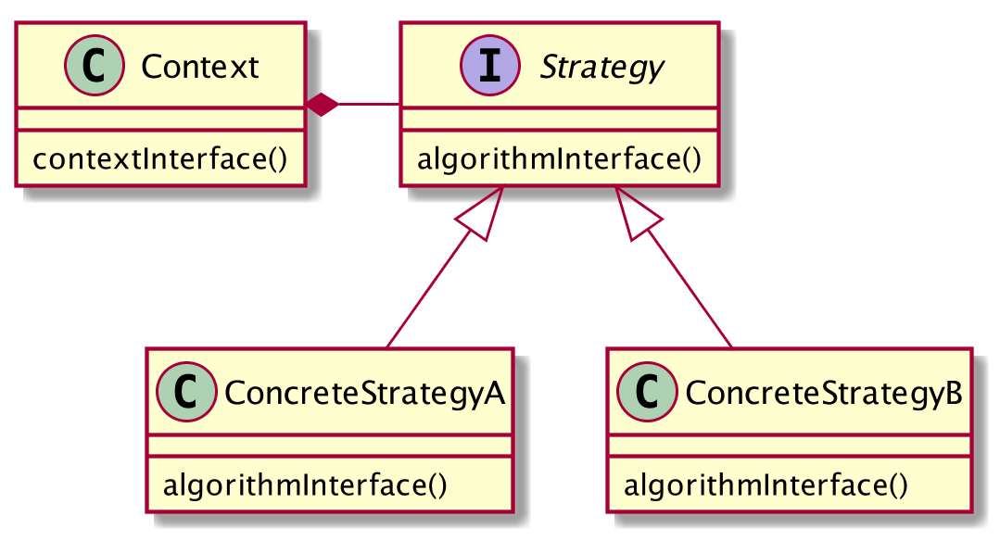
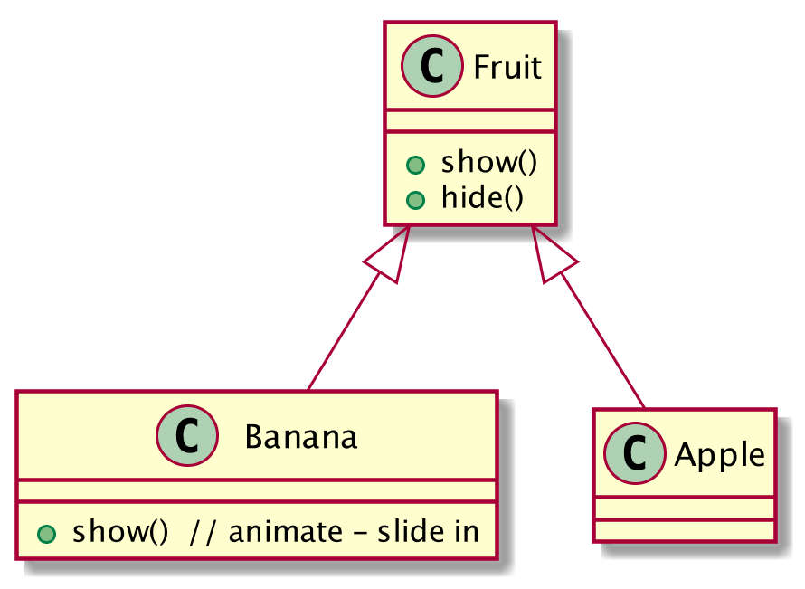
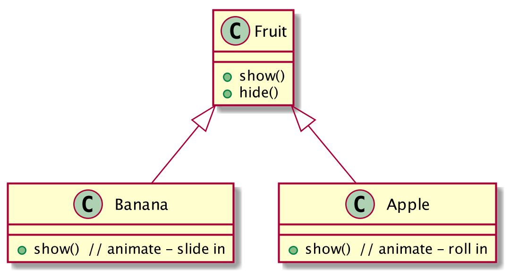
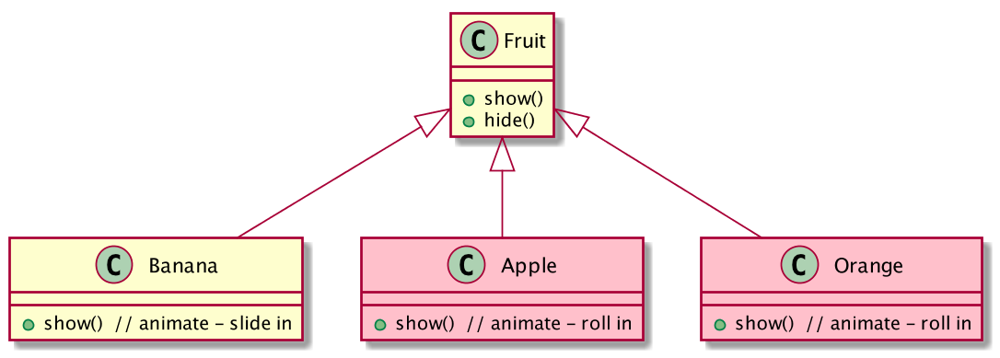
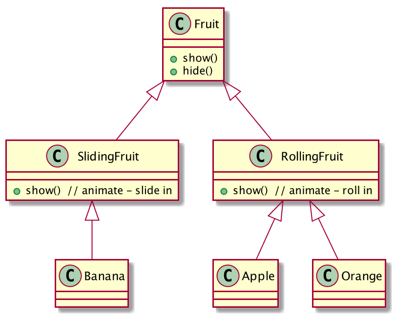
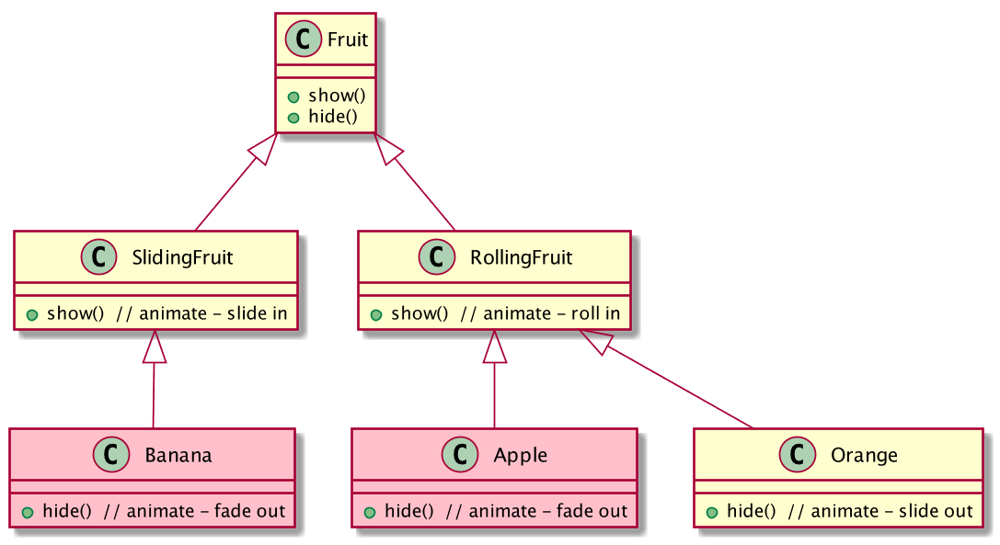
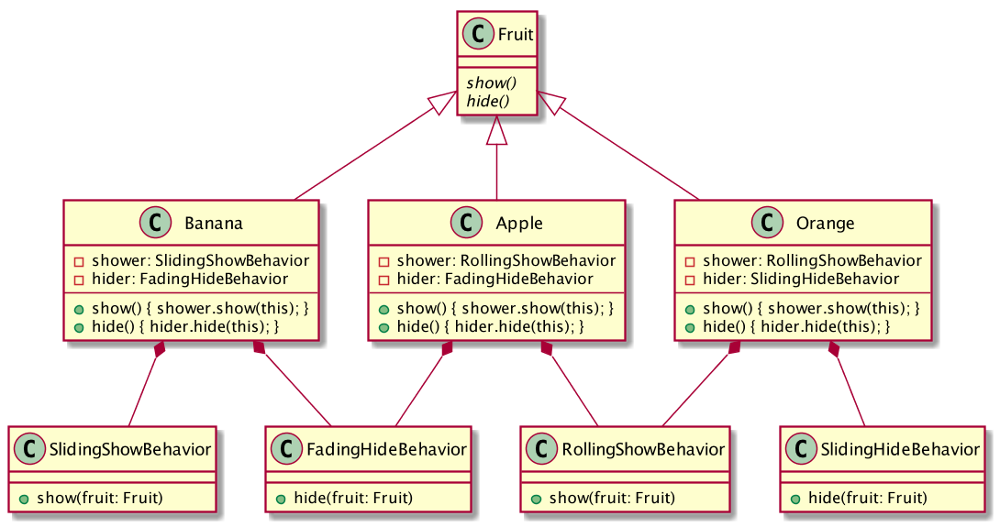
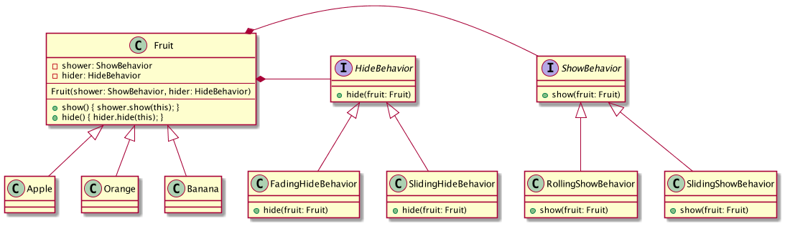
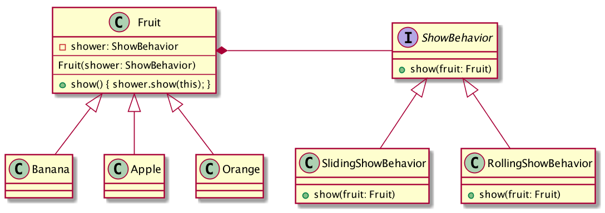

Many of the classical object oriented design patterns were conceived
to work around constraints imposed by strictly typed languages without
support for first class functions. In dynamically typed, functional
languages, there are often simpler patterns to achieve the same objectives.
Case Study
Strategy Pattern
“Define a family of algorithms, encapsulate each one, and make
them interchangable. Strategy lets the algorithm vary independently
from clients that use it.” [GoF 315]
Strategy Pattern

Case Study
Approach
Conceptual deep dive
Classical style JavaScript implementation
"Native style" JavaScript implementation





“Favor object composition over class inheritance.”
[GoF 20]

“Program to an interface, not an implementation.
[GoF 18]
Strategy Pattern

Strategy Pattern

Client
// no need to pass strategy into constructor
var fruitList = [new Apple(), new Orange(), new Banana()];
// client can change strategies dynamically
fruitList[0].show = showRollingRight;
fruitList.forEach(function(fruit) {
fruit.show();
});
var orange = new Orange();
// can dynamically change default strategy for entire class
Orange.prototype.show = showSlidingLeft;
orange.show()
// can dynamically use alternate strategy via call/apply
var banana = new Banana();
showRollingRight.apply(banana);
Summary
Primary Differences
point directly to function - no container class or delegation
don't need to instantiate context with strategy
don't need to pass data to strategy algorithm, bind dynamically